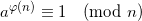
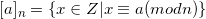
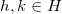
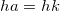
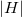
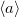

A very important and useful theorem in number theory is named after Leonhard Euler:

Where is Euler's totient function - the count of numbers smaller than n that are coprime to it.
Here I want to present a nice proof of this theorem, based on group theory. I begin with some preliminary definitions and gradually move towards the final goal.
(I) Congruence class: Let a and n > 0 be integers. The set of all integers that have the same remainder as a when divided by n is called the congruence class of a modulo n and is denoted by , where:

is the set of all congruence classes modulo n.
(II) Units of : If for we find some such that , we call a unit of . The set of units of is denoted by 
For example, is a unit of , because .
(III) The congruence class is a unit of if and only if (the GCD of a and n is 1, in other words they're co-prime).
Proof: By definition of units, there exists some such that . Therefore , which implies that for some q, . Thus . So 1 is a linear combination of a and n. Therefore  .
On the other hand, if , there exist q and b such that , or , so .
.
On the other hand, if , there exist q and b such that , or , so .
(IV) By definition, since every unit of is coprime to n, the number of units of (or, the number of elements of ) is .
Let's keep this result in mind and prepare some more theorems in order to attack the proof.
(V) Lagrange's theorem: If H is a subgroup of the finite group G, then the order of H is a divisor of the order of G.
Proof: Let's first define and . Also, let be the equivalence relation defined in example (III) of the previous post. Since it's an equivalence relation, it partitions G into equivalence classes. Define as the equivalence class of a with , for any .
To prove Lagrange's theorem, we're going to show that has the same number of elements as H. For this purpose, let's define a function by for all and prove that it's an isomorphism. To do that, we'll have to separately prove that it's onto and one-to-one.
But first, let's verify that the stated codomain of is correct. If then because , so by definition of we have . So indeed the codomain of is .
- Let's pick some y in G such that . By definition of our it means that for some . So
 has a solution (since ). Therefore is onto.
has a solution (since ). Therefore is onto. - Suppose that  with . Then  and by cancellation in groups we have , which proves that is one-to-one.
So we've proved that is an isomorphism, which means that (we can map each element of to one and only one element of ).
We've previously shown that the equivalence classes of partition G. But now we see that the size of each equivalence class is equal to . Therefore, all the equivalence classes are of the same size, and where t is the number of equivalence classes. This proves Lagrange's theorem.
We're almost there. To see how all of this relates to Euler's theorem, let's first define the order of an element of a group.
(VI) Order of group element: Let . If there exists a positive integer n such that , then a is said to have finite order and the smallest such positive integer is called the order of a, denoted by .
We'll also define the subgroup generated by an element:
(VII) Cyclic subgroup: is a cyclic subgroup of G generated by . For a finite G this subgroup is also finite, and its size is: .
Armed with these definitions, we're now ready for the following corollary of Lagrange's theorem:
(VIII) Lagrange theorem corollary: Let G be a finite group of order n. Then:
- For any , divides n
- For any ,
Proof: As we've seen, and by Lagrange's theorem divides n (since  is a subgroup of G). Therefore (1) is proven. For (2), note that if a has order m, then by (1) we have for some integer q. Thus . But a has order m, so and therefore . Q.E.D.
We now finally have all the tools required to prove Euler's theorem.
Proof of Euler's theorem: Let the group of units modulo n. The order of G is (by (IV)). Now, by (VIII) part (2), raising any congruence class to the power must give the identity element. The statement is equivalent to